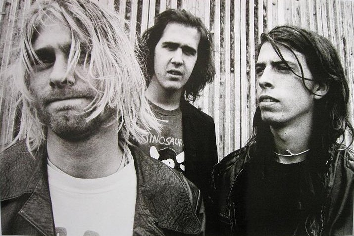
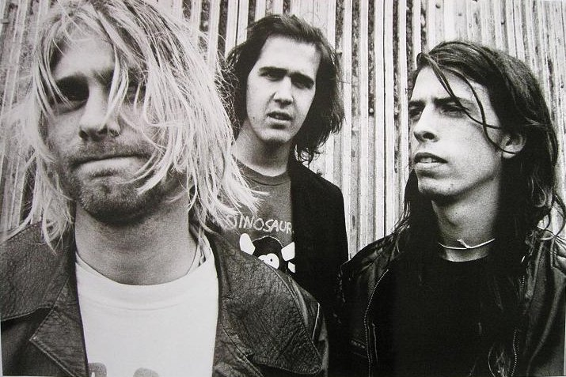

Who was Nirvana?
Nirvana was an American rock band formed by singer/guitarist Kurt Cobain and bassist Krist Novoselic in Aberdeen, Washington in 1987. Nirvana went through a succession of drummers, the longest-lasting being Dave Grohl, who joined the band in 1990. Despite releasing only three full-length studio albums in their seven-year career, Nirvana has come to be regarded as one of the most influential and important rock bands of the modern era. In the late 1980s Nirvana established itself as part of the Seattle grunge scene, releasing its first album Bleach for the independent record label Sub Pop in 1989. The band eventually came to develop a sound that relied on dynamic contrasts, often between quiet verses and loud, heavy choruses. After signing to major label DGC Records, Nirvana found unexpected success with "Smells Like Teen Spirit", the first single from the band's second album Nevermind (1991). Nirvana's sudden success widely popularized alternative rock as a whole, and the band's frontman Cobain found himself referred to in the media as the "spokesman of a generation", with Nirvana being considered the "flagship band" of Generation X. Read more »
{kind=link}
Nirvana's third and final studio album, In Utero (1993), featured an abrasive, less-mainstream sound and challenged the group's audience. The album did not match the sales figures of Nevermind but was still a critical and commercial success. Nirvana's brief run ended following the death of Kurt Cobain in 1994, but various posthumous releases have been issued since, overseen by Novoselic, Grohl, and Cobain's widow Courtney Love. Since its debut, the band has sold over 25 million records in the United States alone, and over 75 million records worldwide, making them one of the best-selling music artists in history. Four of their albums, two studio and two live, have reached the number one spot on the Billboard 200 chart. In the years since the band's breakup, Nirvana has been ranked highly on several lists by various publications as one of the greatest artists of all time. Rolling Stone described Nirvana's influence as having "kicked in" the 1990s as a musical era, adding that their music "guaranteed the nineties would not suck," and claimed that the band "transformed rock for a generation." According to the magazine, "few bands in rock history have had a more immediate and tangible impact on their contemporary pop musical landscape than Nirvana did in the early Nineties." Nirvana is set to be inducted into the Rock and Roll Hall of Fame in 2014, the band's first year of eligibility; the museum's biography of the band states that Nirvana "start[ed] a rock revolution" and "remain an enduring influence and challenge", before declaring them "proof that the right band with the right noise can change the world."
For much more information »
Show less »Members;
Kurt Cobain;
Kurt Donald Cobain (February 20, 1967 – c. April 5, 1994) was an American musician and artist, best known as the lead singer, guitarist and primary songwriter of the grunge band Nirvana. Cobain formed Nirvana with Krist Novoselic in Aberdeen, Washington, in 1985 and established it as part of the Seattle music scene, having its debut album Bleach released on the independent record label Sub Pop in 1989. After signing with major label DGC Records, the band found breakthrough success with "Smells Like Teen Spirit" from its second album Nevermind (1991). Read more »
{kind=link}
Following the success of Nevermind, Nirvana was labeled "the flagship band" of Generation X, and Cobain hailed as "the spokesman of a generation". Cobain, however, was often uncomfortable and frustrated, believing his message and artistic vision to have been misinterpreted by the public, with his personal issues often subject to media attention. He challenged Nirvana's audience with its final studio album In Utero (1993). It did not match the sales figures of Nevermind but was still a critical and commercial success. During the last years of his life, Cobain struggled with heroin addiction, illness and depression. He also had difficulty coping with his fame and public image, and the professional and lifelong personal pressures surrounding himself and his wife, musician Courtney Love. On April 8, 1994, Cobain was found dead at his home in Seattle, the victim of what was officially ruled a suicide by a self-inflicted shotgun wound to the head. The circumstances of his death at age 27 have become a topic of public fascination and debate. Since their debut, Nirvana, with Cobain as a songwriter, has sold over 25 million albums in the US, and over 75 million worldwide.
For much more information »
Show less »Dave Grohl;
David Eric "Dave" Grohl (born January 14, 1969) is an American rock musician, multi-instrumentalist, singer-songwriter, and film director, who is the lead vocalist, guitarist, main songwriter and founder of the band Foo Fighters. Prior to Foo Fighters, Grohl was the drummer for the grunge band Nirvana. He is also the drummer and co-founder of the rock supergroup Them Crooked Vultures. Grohl has additionally written all the music and performed all the instruments for his short-lived side projects Late! and Probot, as well as being involved with Queens of the Stone Age numerous times throughout the past decade. Read more »
{kind=link}
He has performed session work (as a drummer) for a variety of musicians, including Garbage, Killing Joke, Nine Inch Nails, David Bowie, Paul McCartney, The Prodigy, Slash, Iggy Pop, Juliette Lewis, Tenacious D, RDGLDGRN, Tom Petty and the Heartbreakers, Lemmy, Stevie Nicks and Ghost.
For much more information »
Show less »Krist Novoselic;
Krist Anthony Novoselic II (/ˌnoʊvəˈsɛlɪtʃ/; Croatian: Novoselić; born May 16, 1965) is an American rock musician, best known for being the bassist and co-founder of the grunge band Nirvana. After Nirvana ended, Novoselic formed Sweet 75 and then Eyes Adrift, releasing one album with each band. From 2006 to 2009 he played in punk band Flipper, with which he played on the studio album Love and the live album Fight, and in 2011 contributed bass and accordion to the song "I Should Have Known", from the Foo Fighters' studio album Wasting Light. Read more »
{kind=link}
Apart from his musical endeavors, Novoselic has been active politically, including the creation of the political action committee JAMPAC (Joint Artists and Musicians Political Action Committee). From November 2007 until September 2010, Novoselic wrote a weekly column on music and politics for Seattle Weekly's website. Since 2008 he has been board chair of the electoral reform organization FairVote.
For much more information »
Show less »


 
